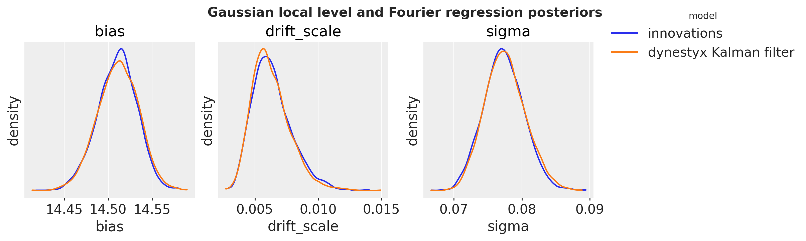
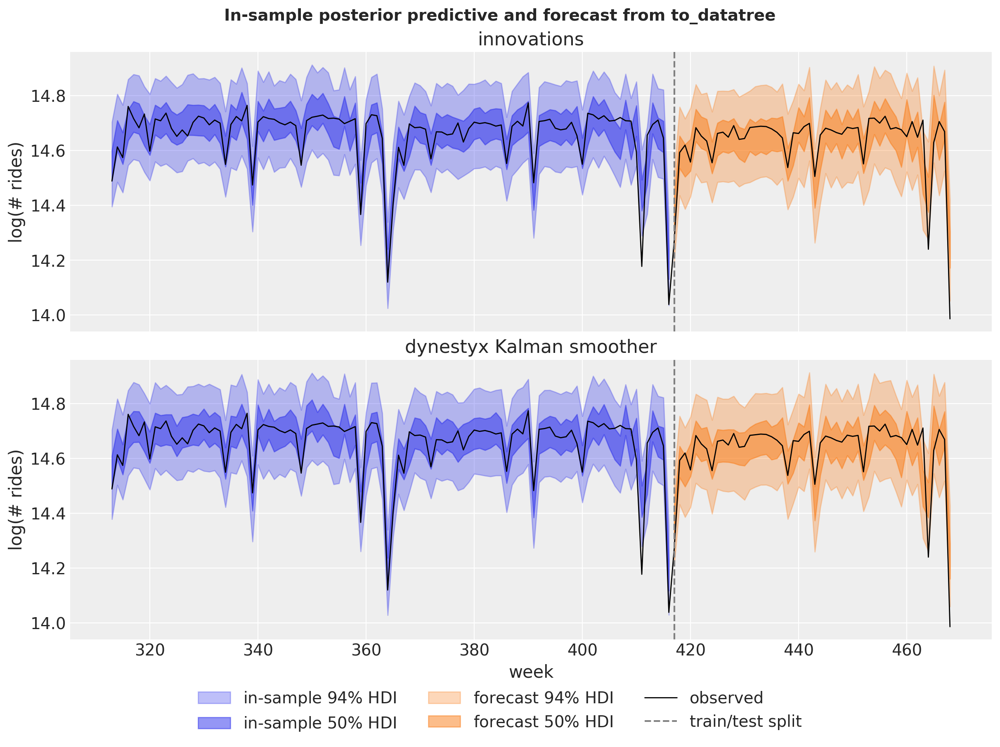
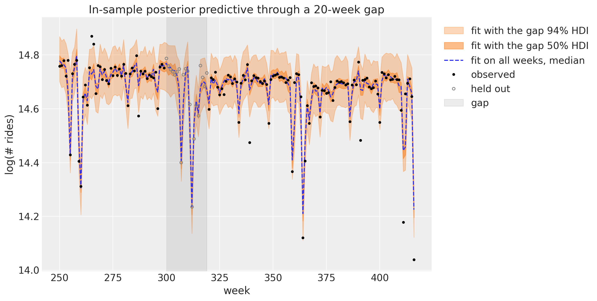
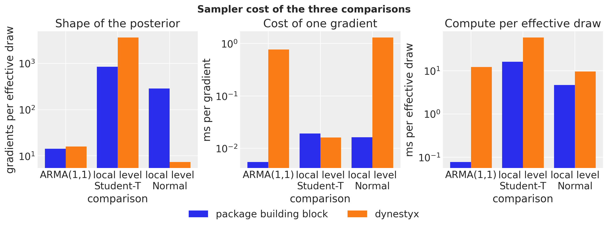

Write dynestyx state space models with the state_space building block, reproduce the ARMA and BART weekly ridership examples, integrate the level out with a Kalman filter, export the in-sample predictive with to_datatree, and fit through a gap of missing observations.
Getting Started with dynestyx State Space Models
This example reproduces the ARMA and comparing inference methods examples with dynestyx models. It is the entry point to dynestyx in numpyro_forecast. The advanced example continues with filtering versus smoothing, the cost of a gradient, variational inference and backtesting.
dynestyx is a probabilistic programming library for dynamical systems, built on NumPyro. A DynamicalModel holds an initial condition, a state evolution and an observation model. Effect handlers decide what dynestyx.sample does with it: a Filter or a Smoother integrates the latent path out and adds the marginal log likelihood to the NumPyro trace, a LatentPathBuilder samples the path, and a Simulator rolls the state forward in time.
The state_space building block of numpyro_forecast.contrib.dynestyx (extra dynestyx) connects a DynamicalModel to the drivers of the package. In a model function (covariates, data=None), it turns the Horizon into the time grids of dynestyx.sample and registers the "obs" and "forecast" sites that forecast, predict_in_sample and to_datatree read. The block reads the observed series from the covariates, as ssoe does, because the drivers call the model without data for the in-sample predictive.
The dynestyx handler goes around each call that runs the model, as in the dynestyx examples. The same model function works under every handler, so the handler selects the inference strategy:
with Filter(filter_config=KFConfig()): mcmc.run(rng_key, covariates_train, data_train)with DiscreteTimeSimulator(n_simulations=1), Smoother(smoother_config=KFSmootherConfig()): tree = to_datatree(rng_key, model, mcmc.get_samples(), data_train, covariates)
We proceed as follows:
ARMA(1,1). We fit an ARMA model with ssoe and as a state space model with the Kalman filter, which gives the exact likelihood.
Local level and Fourier regression. We fit the BART weekly ridership model with innovations and with an explicit latent path from dynestyx, and forecast the last year with both.
Integrating out the level. With Normal noise, the Kalman filter integrates the level out, so the sampler explores only the parameters.
In-sample posterior predictive. We export the Kalman model with to_datatree under a Kalman smoother, without a refit.
Missing data. We fit the explicit-path model through a gap of 20 weeks.
Sampler cost. We compare the cost of the three pairs of fits.
Prepare Notebook
import numpyronumpyro.set_host_device_count(n=4) # before any import that initializes jaxfrom time import perf_counterfrom typing import Literalimport arviz as azimport dynestyx as dsximport jaximport jax.numpy as jnpimport matplotlib.pyplot as pltimport numpy as npimport numpyro.distributions as distimport pandas as pdimport xarray as xrfrom dynestyx import DiscreteTimeSimulator, DynamicalModel, Filter, LatentPathBuilder, Smootherfrom dynestyx.inference.configs.smoother import KFSmootherConfigfrom dynestyx.inference.filters import KFConfigfrom dynestyx.models import LinearGaussianObservation, LinearGaussianStateEvolutionfrom jax import randomfrom jax.flatten_util import ravel_pytreefrom jaxtyping import Floatfrom numpyro.infer import MCMC, NUTSfrom numpyro.infer.reparam import LocScaleReparamfrom numpyro.infer.util import initialize_modelfrom numpyro_forecast import ( Horizon, eval_crps, forecast, innovations, predict, predict_in_sample, ssoe, to_datatree,)from numpyro_forecast.contrib.dynestyx import state_spacefrom numpyro_forecast.datasets import load_bart_weeklyfrom numpyro_forecast.features import fourier_featuresfrom numpyro_forecast.typing import Array, ForecastModelaz.style.use("arviz-darkgrid")plt.rcParams["figure.figsize"] = [10, 6]plt.rcParams["figure.dpi"] =100plt.rcParams["figure.facecolor"] ="white"rng_key = random.PRNGKey(seed=42)print(f"dynestyx {dsx.__version__}, numpyro {numpyro.__version__}, jax {jax.__version__}")%load_ext autoreload%autoreload 2%load_ext jaxtyping%jaxtyping.typechecker beartype.beartype%config InlineBackend.figure_format ="retina"
dynestyx 0.8.0, numpyro 0.22.0, jax 0.11.2
Every comparison fits both models with the same NUTS settings: 4 chains of 1{,}000 draws, the same warmup length and the same chain method. The helpers below run a fit, measure the cost of one gradient of the log density, and collect the diagnostics.
fit_nuts returns the sampler and its wall time, which includes the compilation.
gradient_cost measures the gradient of the potential energy, which NUTS evaluates at every leapfrog step. It evaluates 1{,}000 gradients at nearby points inside one compiled loop and returns the milliseconds per gradient, without the compilation and without the Python overhead of one call per gradient.
convergence reports, over the scalar parameters, the smallest bulk effective sample size (ESS), the largest \hat{R} and the number of divergent transitions.
diagnostics adds the wall time, the leapfrog steps per draw and the gradient evaluations of the sampling phase. The ratio of gradient evaluations to the smallest ESS measures how hard the posterior is for NUTS.
def fit_nuts( rng_key: Array, model: ForecastModel, covariates: Array, data: Array,*, num_warmup: int, chain_method: Literal["parallel", "sequential", "vectorized"],) ->tuple[MCMC, float]:"""Fit ``model`` with NUTS (4 chains, 1,000 draws each) and return the wall time in seconds.""" mcmc = MCMC( NUTS(model), num_warmup=num_warmup, num_samples=1_000, num_chains=4, chain_method=chain_method, progress_bar=False, ) start = perf_counter() mcmc.run(rng_key, covariates, data, extra_fields=("num_steps", "diverging")) jax.block_until_ready(mcmc.get_samples())return mcmc, perf_counter() - startdef gradient_cost( rng_key: Array, model: ForecastModel, covariates: Array, data: Array, num_evals: int=1_000) ->float:"""Milliseconds per gradient of the potential energy of ``model``, in one compiled loop.""" model_info = initialize_model(rng_key, model, model_args=(covariates, data)) flat, unravel = ravel_pytree(model_info.param_info.z)# distinct points, so that the compiler cannot reuse one gradient for every iteration points = flat +1e-3* random.normal(rng_key, (num_evals, flat.size)) value_and_grad = jax.value_and_grad(lambda z: model_info.potential_fn(unravel(z))) run = jax.jit(lambda z: jax.lax.map(value_and_grad, z)) jax.block_until_ready(run(points)) # compile start = perf_counter() jax.block_until_ready(run(points))return (perf_counter() - start) / num_evals *1e3def posterior_tree(mcmc: MCMC, names: list[str]) -> xr.DataTree:"""Return the ``(chain, draw)`` posterior of the scalar parameters ``names`` as a DataTree.""" grouped = mcmc.get_samples(group_by_chain=True)return az.from_dict({"posterior": {name: np.asarray(grouped[name]) for name in names}})def convergence(mcmc: MCMC, names: list[str]) ->dict[str, float]:"""Smallest bulk ESS, largest R-hat and divergent transitions over the parameters ``names``.""" summary = az.summary(posterior_tree(mcmc, names), var_names=names, round_to="none")return {"min bulk ESS": float(summary["ess_bulk"].min()),"max R-hat": float(summary["r_hat"].max()),"divergences": float(np.asarray(mcmc.get_extra_fields()["diverging"]).sum()), }def diagnostics( mcmc: MCMC, seconds: float, ms_per_gradient: float, names: list[str]) ->dict[str, float]:"""Sampler cost and convergence of one fit over the scalar parameters ``names``.""" steps = np.asarray(mcmc.get_extra_fields()["num_steps"]) checks = convergence(mcmc, names)return {"wall time (s)": seconds,"leapfrog steps per draw": float(steps.mean()),"gradient evaluations": float(steps.sum()),**checks,"ms per gradient": ms_per_gradient,"gradients per effective draw": float(steps.sum()) / checks["min bulk ESS"], }def cost_table(cost: dict[str, dict[str, float]]) -> pd.DataFrame:"""One row per fit, rounded per column, with the counts as integers.""" digits = {"wall time (s)": 1, "leapfrog steps per draw": 1, "max R-hat": 3} digits |= {"ms per gradient": 4, "gradients per effective draw": 1} counts = {"gradient evaluations": int, "min bulk ESS": int, "divergences": int}return pd.DataFrame(cost).T.round(digits |dict.fromkeys(counts, 0)).astype(counts)
Three plotting helpers: one overlays the posteriors of two fits, one parameter per panel, one computes the HDI bounds of forecast draws, and one writes the legend label of an HDI band.
def plot_posteriors( fits: dict[str, MCMC], names: list[str], title: str, truth: dict[str, float] |None=None) ->None:"""Overlay the posterior densities of ``names`` for every fit, one panel per parameter.""" trees = {label: posterior_tree(mcmc, names) for label, mcmc in fits.items()} pc = az.plot_dist( trees, var_names=names, kind="kde", visuals={"credible_interval": False,"point_estimate": False,"point_estimate_text": False, }, figure_kwargs={"figsize": (12, 3.5)}, ) pc.add_legend("model")for name in names: ax = pc.get_target(name, {}) ax.set(xlabel=name, ylabel="density")if truth isnotNone: ax.axvline(truth[name], color="black", ls="--", lw=1) pc.viz["figure"].item().suptitle(title, fontsize=14, fontweight="bold")def hdi_bounds( draws: Float[Array | np.ndarray, " sample time 1"], prob: float) ->tuple[np.ndarray, np.ndarray]:"""Lower and upper HDI bounds over the sample axis of ``(sample, time, 1)`` draws.""" da = xr.DataArray(np.asarray(draws)[..., 0], dims=["sample", "time"]) bounds = az.hdi(da, prob=prob, dim="sample")return bounds.sel(ci_bound="lower").to_numpy(), bounds.sel(ci_bound="upper").to_numpy()def hdi_label(prob: float, prefix: str="") ->str:r"""Legend label for an HDI band, e.g. ``$94\%$ HDI``.""" percent =f"{prob:.0%}".replace("%", r"\%")returnf"{prefix}${percent}$ HDI"
with ssoe, which conditions on y_{-1} = \mu and \varepsilon_{-1} = 0. The same model is a linear-Gaussian state space model, so the Kalman filter gives the exact likelihood instead. With the deviation a_t = y_t - c from the process mean c = \mu / (1 - \phi), the state x_t = (a_t, \theta \varepsilon_t) follows
x_t = A x_{t-1} + g \, \varepsilon_t, \qquad A = \begin{pmatrix} \phi & 1 \\ 0 & 0 \end{pmatrix}, \qquad g = \begin{pmatrix} 1 \\ \theta \end{pmatrix},
so the state covariance is Q = \sigma^2 g g^\top, and the observation is y_t = H x_t + c with H = (1, 0). The initial state has the stationary covariance P_0, the solution of P_0 = A P_0 A^\top + Q. The state noise has rank one, so we add a small jitter \delta = 10^{-4} \sigma^2 to Q, to P_0 and as the observation variance, which keeps the Cholesky factors defined in single precision.
We simulate 100 steps with \phi = 0.4, \theta = 0.7 and \sigma = 0.5. The priors are those of the ARMA example, which also checks them with prior predictive samples.
The dynestyx model has the same priors. arma_dynamics builds the matrices above, and the model function reads the series from the covariates and hands the Horizon, the window and the dynamics to state_space.
def arma_dynamics(mu: Array, phi: Array, theta: Array, sigma: Array) -> DynamicalModel:"""ARMA(1,1) as a linear-Gaussian state space model with a stationary initial state.""" A = jnp.array([[phi, 1.0], [0.0, 0.0]]) g = jnp.array([1.0, theta]) Q = sigma**2* jnp.outer(g, g) jitter =1e-4* sigma**2* jnp.eye(2) P0 = jnp.linalg.solve(jnp.eye(4) - jnp.kron(A, A), Q.reshape(-1)).reshape(2, 2)return DynamicalModel( initial_condition=dist.MultivariateNormal(jnp.zeros(2), 0.5* (P0 + P0.T) + jitter), state_evolution=LinearGaussianStateEvolution(A=A, cov=Q + jitter), observation_model=LinearGaussianObservation( H=jnp.array([[1.0, 0.0]]), R=jitter[:1, :1], bias=(mu / (1.0- phi))[None] ), )def arma_ssm(covariates: Array, data: Array |None=None) ->None:"""ARMA(1,1) as a dynestyx state space model.""" h = Horizon.from_data(covariates, data) y = covariates[..., : h.t_obs, :] # the observed window travels in the covariates mu = numpyro.sample("mu", dist.Normal(loc=0, scale=1)) phi = numpyro.sample("phi", dist.Uniform(low=-1, high=1)) theta = numpyro.sample("theta", dist.Uniform(low=-1, high=1)) sigma = numpyro.sample("sigma", dist.HalfNormal(scale=1)) state_space(h, "f", y, arma_dynamics(mu, phi, theta, sigma))
We fit both models with parallel chains. The dynestyx fit runs under a Kalman filter on the cd_dynamax backend. We pass KFConfig explicitly: without a configuration, Filter() uses an ensemble Kalman filter, which is approximate.
Both fits converge: the largest \hat{R} is 1.002, the smallest bulk ESS is above 1{,}800 of the 4{,}000 draws, and there are no divergent transitions. Neither model samples a path, so NUTS takes about the same number of leapfrog steps per draw (7.8 and 7.5). A gradient of the Kalman filter costs about 140 times more (0.7659 against 0.0055 milliseconds), because every step propagates and updates a 2 \times 2 state covariance, where the ssoe recursion is one multiply-add. The wall time (1.5 against 18.9 seconds) also includes the warmup and the compilation.
The two posteriors agree. The true values of \mu, \phi and \theta lie inside the bulk of both, and the true \sigma = 0.5 lies in the upper tail of both, so that difference comes from the simulated data, not from the method. The ssoe likelihood conditions on the first observation and the Kalman filter likelihood is exact, but with 100 observations the difference does not show.
Local Level and Fourier Regression
The comparing inference methods example fits a random walk level plus a Fourier regression with Student-T noise to the weekly BART ridership:
where y_t is the log ridership of week t, u_t holds the 52 Fourier terms of the yearly cycle, and s is the drift_scale. The priors are those of the comparing inference methods example. We hold out the last 52 weeks.
The covariate array carries the series in column 0 and the Fourier terms in columns 1:. The dynestyx model reads its observed window from column 0, and the numpyro_forecast model ignores it.
covariates (469, 53), train (417, 1), test (52, 1)
The numpyro_forecast model samples the 417 weekly steps of the level with innovations. The comparing inference methods example also samples a centered site for its LocScaleReparam. That site only selects a parameterization, so its posterior equals its prior and NUTS mixes poorly on it. Here we fix the non-centered form instead.
def univariate_model(covariates: Array, data: Array |None=None) ->None:"""Random walk level plus Fourier regression with Student-T noise, with ``innovations``.""" h = Horizon.from_data(covariates, data) fourier = covariates[..., 1:] # column 0 is the series, read only by the dynestyx model bias = numpyro.sample("bias", dist.Normal(0.0, 10.0)) weight = numpyro.sample("weight", dist.Normal(0.0, 0.1).expand([fourier.shape[-1]]).to_event(1) ) drift_scale = numpyro.sample("drift_scale", dist.LogNormal(-20.0, 5.0)) nu = numpyro.sample("nu", dist.Gamma(10.0, 2.0)) sigma = numpyro.sample("sigma", dist.LogNormal(-5.0, 5.0)) drift = innovations( h, "drift", dist.Normal(0.0, drift_scale), reparam=LocScaleReparam(centered=0) ) level = jnp.cumsum(drift, axis=-2) regression = (weight * fourier).sum(axis=-1, keepdims=True) predict(h, dist.StudentT(df=nu, loc=0.0, scale=sigma), level + bias + regression)
Student-T noise rules out an exact Kalman filter. A particle filter does not combine well with NUTS here: with resampling, the likelihood estimate is not continuous in the parameters, and without it the weights collapse over 417 weeks. The dynestyx model therefore samples the level with a LatentPathBuilder, as innovations does. The observation model is a function of the state x_t, the controls u_t and the time t, and the Fourier terms enter as controls over the whole horizon, so the forecast reads their future rows from the covariates.
The builder samples the states x_t = b + \ell_t directly (the centered form), not their steps. With the intercept b as a separate parameter, a change of b must move all 417 states the other way. In this form the intercept is the initial state, so the dynestyx model has no bias site and gives the initial state the \text{Normal}(0, 10) prior of the intercept. The two models differ only in the variance s^2 that the first step adds to this prior, which is negligible.
def level_regression(covariates: Array, data: Array |None=None) ->None:"""Random walk level plus Fourier regression with Student-T noise, as a dynestyx model.""" h = Horizon.from_data(covariates, data) y = covariates[..., : h.t_obs, :1] # the observed window, (t_obs, 1) controls = covariates[..., 1:] # the Fourier terms over the whole horizon, (duration, 52) weight = numpyro.sample("weight", dist.Normal(0.0, 0.1).expand([controls.shape[-1]]).to_event(1) ) drift_scale = numpyro.sample("drift_scale", dist.LogNormal(-20.0, 5.0)) nu = numpyro.sample("nu", dist.Gamma(10.0, 2.0)) sigma = numpyro.sample("sigma", dist.LogNormal(-5.0, 5.0))def observation(x: Array, u: Array |None, t: Array) -> dist.Distribution: regression =0.0if u isNoneelse u @ weightreturn dist.StudentT(nu, x + regression, sigma).to_event(1) dynamics = DynamicalModel( initial_condition=dist.Normal(0.0, 10.0).expand([1]).to_event(1), # the intercept state_evolution=lambda x, u, t_now, t_next: dist.Normal(x, drift_scale).to_event(1), observation_model=observation, control_dim=controls.shape[-1], ) state_space(h, "f", y, dynamics, controls=controls)
Both fits run their chains one after the other (chain_method="sequential"). Parallel chains under a LatentPathBuilder crashed the Python process with dynestyx0.8.0 on the machine that executed this notebook, and a fair wall time needs the same chain method on both sides.
We keep the LatentPathBuilder instance of the fit. The builder records the pattern of missing observations from the concrete data of the fit, and the drivers later run the model under jax.jit, where the data are traced, so every later call must use the same instance.
The explicit path takes fewer leapfrog steps per draw than innovations (107 against 255), its gradients are slightly cheaper (0.0161 against 0.0191 milliseconds), and it needs less than a fifth of the wall time (20.6 against 111.7 seconds). But it does not converge as well. Its largest \hat{R} is 1.057, above the usual threshold of 1.01, and its smallest bulk ESS is 117, so per effective draw it needs about four times as many gradients (3{,}646 against 846). Neither fit has divergent transitions. The diagnostics per parameter show which parameter is slow:
drift_scale, the scale of the weekly steps of the level, is the slow parameter of the explicit path: its bulk ESS is 117, against 1{,}372 under innovations, while nu and sigma mix well under both. The builder samples the states in centered form and has no reparameterization option, while innovations samples the non-centered steps, so the leapfrog counts compare two parameterizations as well as two libraries. The summaries of the explicit path are approximate, and longer chains would make them more reliable.
The densities of nu and sigma coincide. The drift_scale density of the explicit path sits a little to the right (posterior mean 0.0047 against 0.0044). That fit has not converged on drift_scale, so the shift may come from its slow mixing.
Both models forecast through forecast. For the dynestyx model, the block reads the forecast from the rollout of a DiscreteTimeSimulator around the call. dynestyx places the initial state of the rollout at the first prediction time, so the block asks for one extra step at the last observation and drops it: the first forecast week is a transition of the final level, not a copy of it. The LatentPathBuilder around the call is the instance that fitted the model.
We plot the dynestyx forecast with its 50\% and 94\% HDI bands, and the innovations forecast as its median and the bounds of its 50\% and 94\% HDI bands. We show medians, not means: with \nu close to 1.5 the Student-T noise has no finite variance, so the mean of the draws moves with a few extreme draws.
The two forecasts agree. The test CRPS is 0.0301 for innovations and 0.0303 for the explicit path, and the medians and the 94\% HDI bounds of the two models lie on top of each other over the whole test year. The slow mixing of drift_scale does not show in the forecast.
Integrating Out the Level
With Normal noise the same model is linear and Gaussian. The Kalman filter then integrates the level out exactly, and NUTS explores the 55 parameters only, not the 417 weekly steps of the level as well. In dynestyx terms, the regression is the control matrix D of the observation model and the bias is its offset.
Both fits run parallel chains, which the Kalman filter supports. This model keeps the bias site of the innovations model: the filter integrates the states out, so no sampled path couples the intercept to the states.
The largest \hat{R} is 1.002 and the smallest bulk ESS is 1{,}599. The innovations fit reports 11 divergent transitions in 4{,}000 draws, a sign that it does not explore every region of the posterior; the Kalman filter reports none. The Kalman filter needs 7.8 leapfrog steps per draw against 114.5, and about 40 times fewer gradients per effective draw (7.4 against 286.4). Each of its gradients runs the filter over the 417 weeks and costs about 80 times more (1.3012 against 0.0163 milliseconds). The Sampler Cost section compares the two effects. The wall time, which includes the warmup and the compilation, is longer for the filter (101.2 against 26.6 seconds).
plot_posteriors( {"innovations": mcmc_gaussian, "dynestyx Kalman filter": mcmc_gaussian_kalman}, gaussian_names, title="Gaussian local level and Fourier regression posteriors",)

The posteriors agree for the three parameters, bias included.
In-Sample Posterior Predictive
predict_in_sample and to_datatree call the model without data and read the "obs" site. For a dynestyx model, the block needs the distribution of the states given the whole window, p(x_t \mid y_{1:T}, \theta), which a Filter does not have: it carries the filtering distribution p(x_t \mid y_{1:t}, \theta) only. A Kalman smoother has the smoothing distribution, and it adds the same marginal likelihood to the trace as the Kalman filter. The draws of the filter fit above are therefore draws of the posterior under the smoother too. We export them under the smoother, with the Simulator outside it for the forecast, and do not refit.
The block draws every in-sample state from its smoothing distribution and pushes it through the observation model. These draws are exact for every week, so the bands and the CRPS below are correct, but they are independent across weeks, not a joint path. innovations and LatentPathBuilder replay a joint posterior path instead.
smoother = Smoother(smoother_config=KFSmootherConfig(filter_source="cd_dynamax"))# the parameters only: the filter fit also recorded its filtered states (f_filtered_states_*),# which the export under the smoother does not needkalman_parameters = { name: valuefor name, value in mcmc_gaussian_kalman.get_samples().items()ifnot name.startswith("f_")}rng_key, key_tree, key_tree_kalman = random.split(rng_key, 3)trees = {"innovations": to_datatree( key_tree, gaussian_model, mcmc_gaussian.get_samples(), bart_train, bart_covariates, num_chains=4, batch_size=500, )}with DiscreteTimeSimulator(n_simulations=1), smoother: trees["dynestyx Kalman smoother"] = to_datatree( key_tree_kalman, gaussian_ssm, kalman_parameters, bart_train, bart_covariates, num_chains=4, batch_size=500, )trees["dynestyx Kalman smoother"]
Both trees carry the posterior_predictive group (the in-sample draws) and the predictions group (the forecast). We merge the (chain, draw) dimensions into one sample axis to score and plot them.
def stacked(tree: xr.DataTree, group: str) -> np.ndarray:"""Draws of ``tree[group]["obs"]`` with ``(chain, draw)`` merged into ``(sample, time, 1)``."""return ( tree[group] .dataset["obs"] .stack(sample=("chain", "draw")) .transpose("sample", "time", "obs_dim") .to_numpy() )pd.DataFrame( {"in-sample CRPS": { label: float(eval_crps(stacked(tree, "posterior_predictive"), bart_train))for label, tree in trees.items() },"test CRPS": { label: float(eval_crps(stacked(tree, "predictions"), bart_test))for label, tree in trees.items() }, }).round(4)
in-sample CRPS
test CRPS
innovations
0.0316
0.0362
dynestyx Kalman smoother
0.0315
0.0363
The in-sample CRPS is 0.0316 for innovations and 0.0315 for the Kalman smoother, and the test CRPS is 0.0362 against 0.0363. The Normal models forecast the test year worse than the Student-T models of the previous section (test CRPS 0.0301 and 0.0303). Those models put the degrees of freedom \nu near 1.6 (the table of the previous section), so the noise of this series has much heavier tails than a Normal distribution.
fig, axes = plt.subplots( nrows=2, ncols=1, figsize=(12, 9), sharex=True, sharey=True, layout="constrained")start = t_obs -104# the last two years of the training window, then the test yearfor ax, (label, tree) inzip(axes, trees.items(), strict=True):for group, color, span in ( ("posterior_predictive", "C0", slice(start, t_obs)), ("predictions", "C1", slice(None)), ): draws = stacked(tree, group) name ="in-sample"if group =="posterior_predictive"else"forecast" weeks = week[start:t_obs] if group =="posterior_predictive"else week[t_obs:]for prob, alpha in ((0.94, 0.3), (0.5, 0.5)): lower, upper = hdi_bounds(draws, prob) ax.fill_between( weeks, lower[span], upper[span], color=color, alpha=alpha, label=hdi_label(prob, prefix=f"{name} "), ) ax.plot(week[start:], bart[start:, 0], color="black", lw=1, label="observed") ax.axvline(t_obs, color="gray", ls="--", label="train/test split") ax.set(title=label, ylabel="log(# rides)")axes[-1].set(xlabel="week")handles, labels = axes[0].get_legend_handles_labels()fig.legend(handles, labels, loc="outside lower center", ncols=3)fig.suptitle("In-sample posterior predictive and forecast from to_datatree", fontsize=14, fontweight="bold");

The two models give the same bands. The in-sample band is the observation noise around the level, and the forecast band is only a little wider: the weekly steps of the level are small, so one year of them adds little to the observation noise. The dynestyx band comes from per-week smoothing draws and the innovations band from joint paths, and for every single week the two are the same distribution, which is all these bands show.
Missing Data
The LatentPathBuilder skips missing observations, so the Student-T model fits through a gap with no change to the model function. (The Kalman filter and smoother of the cuthbert backend skip them too, while the cd_dynamax backend rejects them.) We remove 20 weeks of the training window. The block reads the observed window from column 0 of the covariates, so the gap goes there as NaN. A NaN in data alone would not reach the likelihood. We also put the gap into data, which to_datatree would store as the observed data.
The gap fit gets its own LatentPathBuilder. A builder keeps one pattern of missing observations per site name and shape, so a second fit with the same builder would replace the pattern that the drivers of the first fit read.
The gap fit mixes even more slowly than the explicit path on all weeks (smallest bulk ESS 65 against 117, largest \hat{R}1.045), with no divergent transitions, so its summaries are approximate too.
We draw the in-sample predictive of the gap fit, which covers the gap weeks, under the builder of that fit. As a reference we use the in-sample predictive of the fit on all weeks. That fit has seen the weeks of the gap, so we expect it to score better there.
rng_key, key_gap_pred, key_full_pred = random.split(rng_key, 3)in_sample = {}with gap_builder: in_sample["fit with the gap"] = predict_in_sample( key_gap_pred, level_regression, mcmc_gap.get_samples(), bart_covariates_gap[:t_obs], batch_size=500, )with latent_path: in_sample["fit on all weeks"] = predict_in_sample( key_full_pred, level_regression, mcmc_latent.get_samples(), bart_covariates[:t_obs], batch_size=500, )before =slice(gap.start -20, gap.start)gap_scores = {}for label, draws in in_sample.items(): lower, upper = hdi_bounds(draws, 0.94) gap_scores[label] = {"CRPS on the gap weeks": float(eval_crps(draws[:, gap], bart_train[gap])),"94% HDI width, gap weeks": float((upper - lower)[gap].mean()),"94% HDI width, 20 weeks before": float((upper - lower)[before].mean()), }pd.DataFrame(gap_scores).T.round(4)
CRPS on the gap weeks
94% HDI width, gap weeks
94% HDI width, 20 weeks before
fit with the gap
0.0256
0.1944
0.1758
fit on all weeks
0.0229
0.1791
0.1787
Inside the gap, the 94\% band of the gap fit is about 11\% wider than in the 20 weeks before (0.194 against 0.176), while the band of the fit on all weeks keeps its width (0.179 in both windows). On the held-out weeks the CRPS of the gap fit is 0.0256, against 0.0229 for the fit that saw them.
fig, ax = plt.subplots(figsize=(12, 6))window =slice(250, t_obs)for prob, alpha in ((0.94, 0.3), (0.5, 0.5)): lower, upper = hdi_bounds(in_sample["fit with the gap"], prob) ax.fill_between( week[window], lower[window], upper[window], color="C1", alpha=alpha, label=hdi_label(prob, prefix="fit with the gap "), )ax.plot( week[window], np.median(np.asarray(in_sample["fit on all weeks"]), axis=0)[window, 0], color="C0", ls="--", label="fit on all weeks, median",)ax.plot(week[window], bart_gap[window, 0], "o", color="black", ms=3, label="observed")ax.plot(week[gap], bart_train[gap, 0], "o", color="gray", ms=4, mfc="none", label="held out")ax.axvspan(gap.start, gap.stop -1, color="gray", alpha=0.15, label="gap")ax.legend(loc="upper left", bbox_to_anchor=(1.01, 1.0))ax.set( title="In-sample posterior predictive through a 20-week gap", xlabel="week", ylabel="log(# rides)",);

The band follows the Fourier regression through the gap, including the two dips of the yearly cycle inside it, and the median of the fit on all weeks stays inside the band. The band widens only a little: 20 weeks of a random walk with the small weekly steps of this series add little to the uncertainty of the level.
Sampler Cost
The three comparisons above measure the same three quantities. The number of gradient evaluations per effective draw depends on the shape of the posterior that NUTS explores. The milliseconds per gradient depend on the model code. Their product is the compute time per effective draw, without the compilation and the overhead that the wall time includes.
cost = pd.concat( {"ARMA(1,1)": pd.DataFrame(arma_cost).T,"local level, Student-T": pd.DataFrame(bart_cost).T,"local level, Normal": pd.DataFrame(gaussian_cost).T, }, names=["comparison", "fit"],)cost["ms per effective draw"] = cost["gradients per effective draw"] * cost["ms per gradient"]fig, axes = plt.subplots(nrows=1, ncols=3, figsize=(12, 4.5), layout="constrained")comparisons =list(cost.index.get_level_values("comparison").unique())positions = np.arange(len(comparisons))panels = {"gradients per effective draw": "Shape of the posterior","ms per gradient": "Cost of one gradient","ms per effective draw": "Compute per effective draw",}for ax, (column, title) inzip(axes, panels.items(), strict=True):for offset, (library, color) inzip( (-0.2, 0.2), (("package building block", "C0"), ("dynestyx", "C1")), strict=True ): values = [ cost.loc[name, column].iloc[0if library =="package building block"else1]for name in comparisons ] ax.bar(positions + offset, values, width=0.4, color=color, label=library) ax.set_yscale("log") ax.set_xticks(positions, [name.replace(", ", "\n") for name in comparisons]) ax.set(title=title, xlabel="comparison", ylabel=column)handles, labels = axes[0].get_legend_handles_labels()fig.legend(handles, labels, loc="outside lower center", ncols=2)fig.suptitle("Sampler cost of the three comparisons", fontsize=14, fontweight="bold");

In the ARMA comparison both models sample the same four parameters, so they need about the same number of gradients per effective draw, and the more expensive gradient of the Kalman filter decides: the ssoe model is about two orders of magnitude cheaper per effective draw. For the Student-T level, the explicit path of dynestyx needs about four times as many gradients per effective draw as innovations, because of the slow drift_scale, and its slightly cheaper gradients do not make up for that. For the Normal level, the Kalman filter needs about 40 times fewer gradients per effective draw, but its gradients cost about 80 times more, so it needs about twice the compute per effective draw. The filter makes the posterior easy for NUTS. Whether it also saves time depends on the cost of its gradient, which grows with the length of the series and the size of the state.
Conclusion
Key Findings
One model function, any handler.state_space turns a DynamicalModel into a numpyro_forecast model. The handler around each call selects the inference: a Kalman filter or smoother integrates the level out, a LatentPathBuilder samples it. forecast, predict_in_sample and to_datatree work unchanged with the handler around the call.
Same posteriors, same forecasts. Where both fits converge, the dynestyx models and the building blocks of the package give the same posteriors. The forecasts of the two BART comparisons agree, with test CRPS values within 0.0002 of each other, and so do the in-sample bands of the two Normal models.
Integrating out moves the cost. With the Kalman filter, NUTS needs few leapfrog steps per draw and few gradients per effective draw, has no divergent transitions, and each gradient costs more. For the Normal level on the CPU, the filter needs about twice the compute per effective draw of innovations.
The explicit path is general. The LatentPathBuilder accepts non-Gaussian observation models and missing observations. It samples the states in centered form, and here drift_scale mixes slowly under it.
Limitations
The in-sample draws under a smoother are independent across weeks. For joint paths, use innovations or a LatentPathBuilder.
The LatentPathBuilder has no reparameterization option. Every later call must use the builder instance of the fit, and parallel chains under it crashed the process on the machine that executed this notebook.
The block models one series per model function, with the step index as its time grid.
Without a handler around a call, dynestyx picks one itself and does not warn, so always pass the handler and its configuration.
Next Steps
The advanced dynestyx example compares filtering and smoothing on a local level model, measures the cost of a full evaluation against a gradient, fits a seasonal model with SVI, and backtests a dynestyx model with expanding windows.